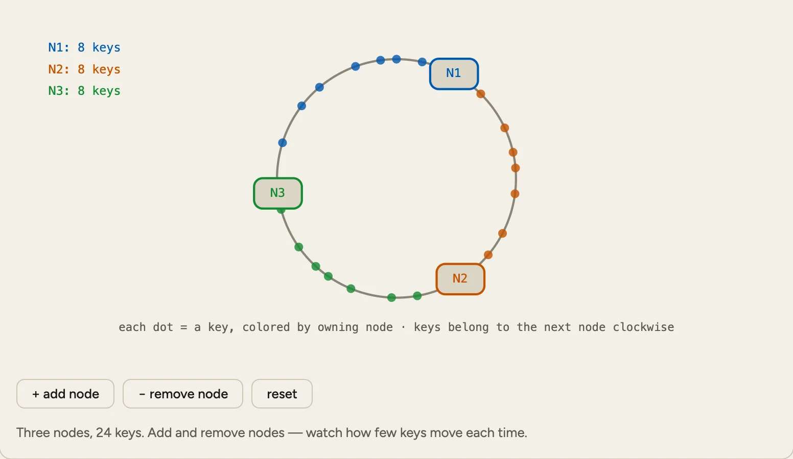
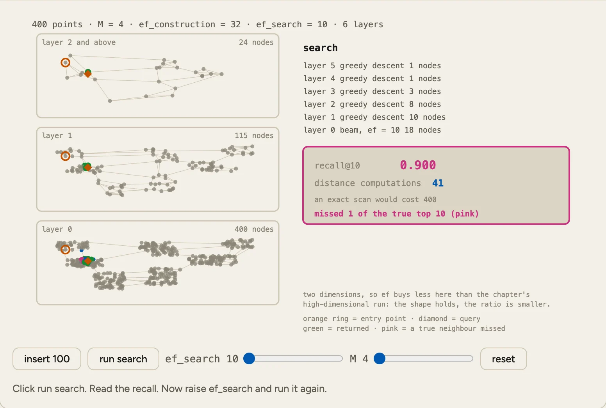
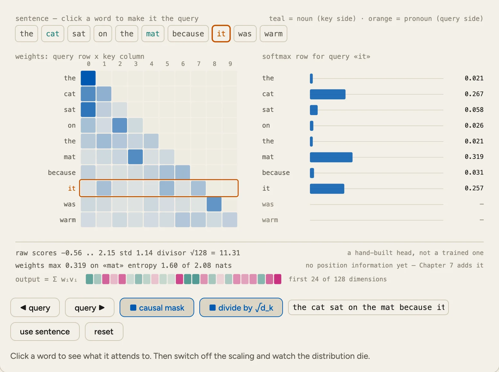
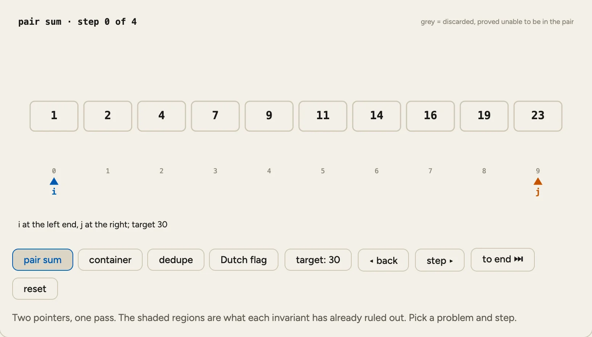
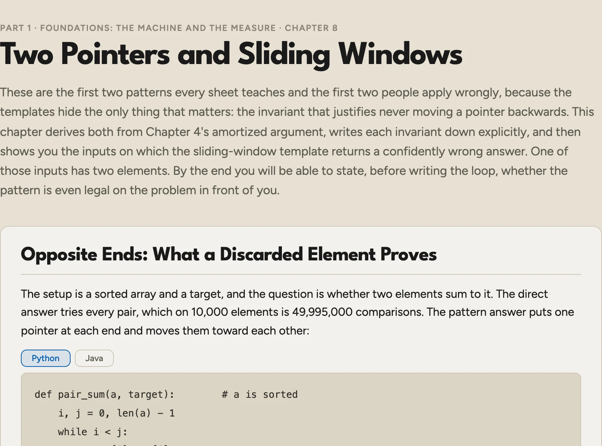
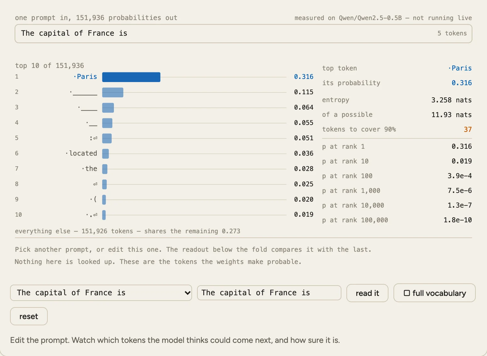
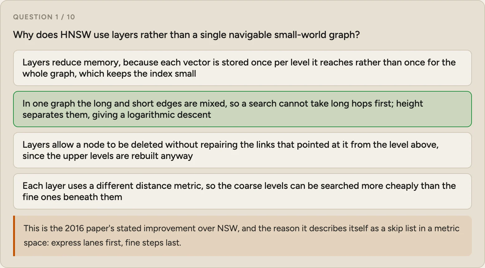
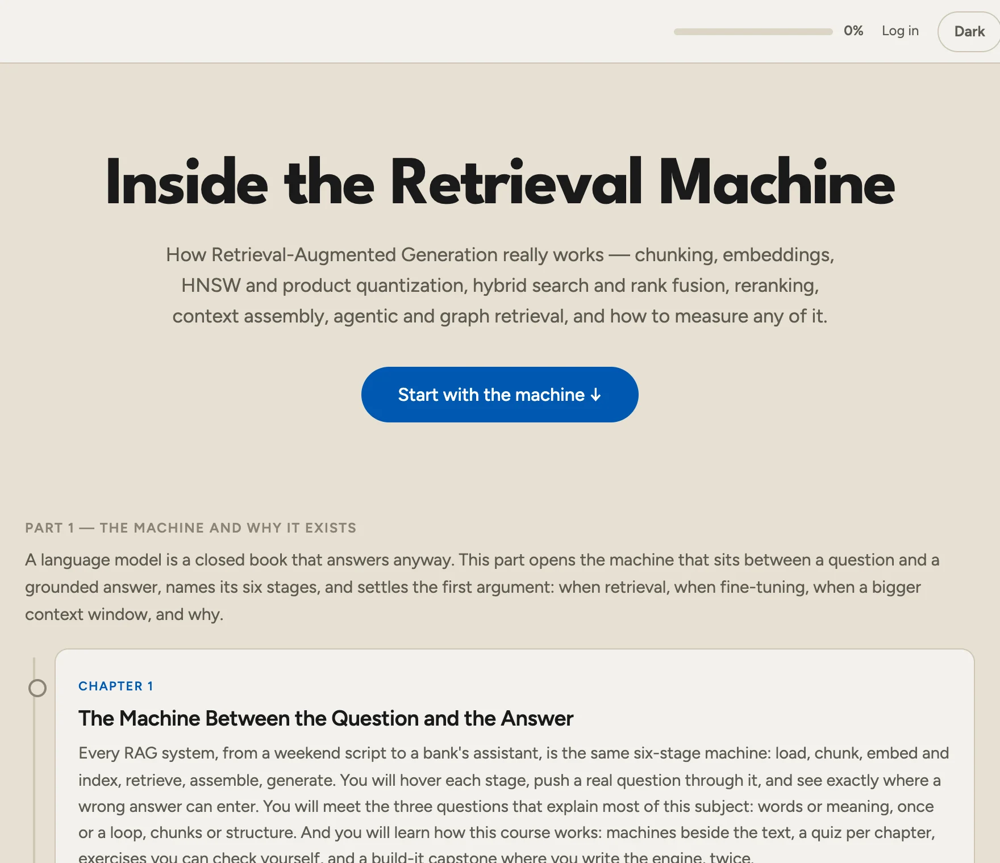

Databases in Depth

How a database stores your rows, finds them fast and keeps them through a crash. Then how many machines agree on one answer. In the last part you write a real database in plain Java.
Read chapter 1Foundations and storage engines
11 chaptersData models, how bytes sit on disk, B-trees, LSM-trees and every other index, and how a write survives a crash halfway through.
Query engines and analytics
2 chaptersHow a declarative query becomes a physical plan, and why analytical engines look nothing like transactional ones.
Distributed systems
7 chaptersUnreliable networks, failure detection, replication, and the algorithms that let separate machines agree at all.
Databases in the real world
6 chaptersScaling patterns, reliability and security, cloud-native designs, and a field guide to choosing a database.
Build your own database
6 chaptersPocketDB in Java: a page cache, slotted pages, a B⁺-tree, a write-ahead log you can kill -9, MVCC, a SQL parser and a server.
RAG in Depth

Everything between a question and a grounded answer: chunking, embeddings, BM25, HNSW, hybrid search, reranking, and how to tell whether any of it works. You finish by building PocketRAG in Python and TypeScript.
Read chapter 1The machine and why it exists
3 chaptersThe six stages between a question and an answer, and when to retrieve, fine-tune or buy a bigger context window.
From documents to an index
10 chaptersThe search engine: chunks, vectors and postings, and the graphs and codebooks that find neighbours in microseconds.
From question to answer
11 chaptersQuery rewriting, rank fusion, reranking, packing a context the model will read, citing or refusing, agents and graphs.
Making it real
7 chaptersMeasuring retrieval and faithfulness, where the milliseconds and dollars go, and how a poisoned document takes over an agent.
Build it: PocketRAG
5 chaptersIngest, BM25, HNSW from scratch, hybrid retrieval with cited answers, an honest benchmark against pgvector, an agent loop.
LLM in Depth

What a language model is, one layer at a time: tokenizers, attention and the transformer block, pretraining, decoding, fine-tuning, quantization and serving. The last part builds PocketLM, a working model, in Python and C.
Read chapter 1What a language model is
4 chaptersA function that scores every next token, the tokenizer bugs nobody blames it for, and the geometry of embeddings.
Inside the block
7 chaptersAttention, heads, rotary positions, the residual stream, and the arithmetic that prices a model before you download it.
Making a model
6 chaptersCorpus filtering and deduplication, the loss and the optimizer, scaling laws, and what the GPU decides.
Making it useful
8 chaptersSampling, structured output, tool calls, fine-tuning, LoRA on one GPU, preference learning and thinking time.
Fast, correct and safe
9 chaptersPrefill and decode, memory bandwidth, batching, quantization, evaluation, attacks, and what to watch at 3am.
Build it: PocketLM
7 chaptersA BPE tokenizer, a block from scratch, a pretraining run, open weights matched logit for logit, and an inference engine in C.
DSA by Patterns

Data structures and algorithms as mechanisms, not recipes. Why two pointers touches each element once, why build-heap is linear, and what to do when a problem matches no pattern. Every routine in Python and Java.
Read chapter 1The machine and the measure
12 chaptersWhat a step is, why a scan is linear, and the patterns everyone else calls tricks, proved instead of memorised.
Order and lookup
5 chaptersSorting and searching: the bound no comparison sort beats, and what your standard library does instead.
The paradigms
6 chaptersBacktracking, dynamic programming and greedy: try and prune, remember, or commit and prove it was safe.
Hierarchies and ranges
8 chaptersFrom the first tree traversal to a segment tree that answers a range query over a million values in twenty steps.
Graphs
8 chaptersOne traversal, one relaxation step and one residual network. The hard part is seeing that it is a graph.
The edges and the engineer
10 chaptersStrings, numbers and geometry, where problems stop being solvable, and what to do in the interview room.
First, read the mechanism
Each chapter explains one mechanism in plain prose, with real numbers and code that runs.




Free and open source
HackDynamics is free and open source. The code is under the
MIT licence and the course text under
CC BY-SA 4.0, so you can read it, translate it, fork it or teach
from it. There is no paywall, no card and no sign-up; an account
only carries your progress between devices. The site is plain HTML, CSS and JavaScript with
no build step. Clone the repository, run python3 -m http.server and the whole
thing opens on your own machine. All 239 machines live in the js folder, and every chapter
is one JavaScript file you can edit. The most useful thing you can send us is
a correction: a wrong fact, a broken machine, a quiz with two right
answers.
Read the source on GitHub.
Being written now
- Operating systems
- Networking
- Compilers